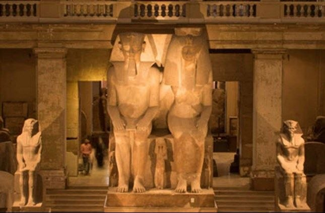

Colossal Statue of Amenhotep III and Tiye
The colossal family group statue of Amenhotep III and Queen Tiye. Featuring the royal couple and their three daughters, it stands as the largest group sculpture ever created."

Group Statue of King Menkaure
A schist group statue of King Menkaure. This group statue depicts King Menkaure standing, flanked on both sides by two women: the goddess Hathor to the King’s right, and the lady of the Bat Nome to the King’s left.

The Masks of Yuya and Tuya
The mummies of Yuya and Tuya were discovered wearing gold-leaf cartonnage masks. As the parents of Queen Tiye, they held high status; Yuya was a prominent priest and landowner from Akhmim, while Tuya held distinguished religious and royal titles.

The Statue of Khafre
This statue depicts King Khafre, the builder of the second-largest pyramid in Giza. Found in his Valley Temple, it shows the King seated confidently on his throne. The sides of the throne are decorated with the Sema Tawy symbol, representing the unification of Upper and Lower Egypt. Behind his head, the god Horus appears as a falcon, spreading his wings around the King as a symbol of divine protection.

Ka-aper: The Sheikh el-Beled
A rare wooden masterpiece depicting the official Ka-aper. Its famous nickname, 'Sheikh el-Beled,' was given by modern excavators due to it s realistic, lifelike features. The statue is celebrated for its stunning inlaid eyes and its depiction of the official in a confident walking pose, symbolizing the prosperity and realism of Old Kingdom art

The Statue of Khufu
This small statuette depicts King Khufu, the builder of the Great Pyramid of Giza. Measuring only 7.5 cm in height, it is the only confirmed three-dimensional portrait of this monarch. When it was first discovered, the head was missing .Sir Flinders Petrie noticed that the break was recent and, recognizing the immense importance of the find, ordered a thorough search. After three weeks of sifting through the debris, the missing head was finally recovered

Narmer Palette
This palette records the unification of Egypt under King Narmer. One side features the King in a victory procession with the Red Crown and intertwined mythical beasts representing unity. The reverse side depicts the legendary 'smiting' scene, where the King, wearing the White Crown, triumphs over his enemies. This powerful imagery became the ultimate symbol of Egyptian pharaonic authority

Mentuhotep II: The Founder of the Middle Kingdom
This iconic statue commemorates the king who reunified Egypt for the second time. Discovered by chance by Howard Carter, it shows the King in a divine "Osiride" pose with black skin, symbolizing rebirth. He wears the Red Crown and the ceremonial Jubilee robe, marking his long and successful reign during the 11th Dynasty

Seneb and His Family
A unique family portrait of the high-ranking official Seneb. The sculptor used a clever composition, placing Seneb’s children at his feet to balance the height of his wife. Seneb held prestigious titles, serving as a priest for the Great Pyramid builders and overseeing the royal treasury. This piece is celebrated for its warm depiction of family affection and its innovative artistic solution for Seneb’s dwarfism.

Akhenaten (The Living Spirit of Aten)
Originally known as Amenhotep IV, Akhenaten was an 18th Dynasty pharaoh who ruled Egypt for 17 years. He is most famous for abandoning traditional Egyptian polytheism and introducing a revolutionary worship centered on Aten. This religious shift is often described as one of the earliest forms of monotheism or henotheism. Early inscriptions represented Aten as the sun, and over time, official language elevated Aten from a mere deity to a supreme solar divinity, surpassing all traditional gods.

Psusennes I
Psusennes I was the third king of the 21st Dynasty, ruling Egypt from Tanis in the eastern Delta (1039–990 BC). He was a strong defender of Egypt's borders against foreign threats. In Tanis, he built royal palaces and a magnificent temple dedicated to the Theban Triad (Amun, his wife Mut, and their son Khonsu). He is most famous for his intact royal tomb, which contained incredible treasures, earning him the nickname 'The Silver Pharaoh' due to his stunning silver coffin

Thutmose III (Thutmose the Great)
Thutmose III (1479–1425 BC) was the pharaoh of the 18th Dynasty of Ancient Egypt. He is widely regarded as one of the greatest warriors, military leaders, and strategists in history. Known as Egypt's first "Warrior Pharaoh," he was the most prominent conqueror of the New Kingdom era, expanding the empire to its greatest territorial extent through brilliant military campaigns.